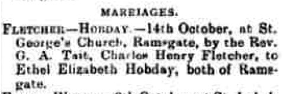
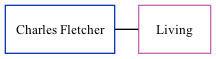

Charles Henry Fletcher
[ Home ] | [ Calendar ] | [ Surnames Index ] | [ Family History ]Charles Fletcher, the husband of Ethel Elizabeth Hobday (the first cousin twice-removed on the mother's side of Nigel Horne), and married Ethel (a dressmaker) at St George's Church, Church Hill, Ramsgate, Kent, England on Dec 14, 19161.
Citations
- England & Wales, Marriage Index: 1916-2005 Online publication - Provo, UT, USA: The Generations Network, Inc., 2009.Original data - General Register Office. England and Wales Civil Registration Indexes. London, England: General Register Office. © Crown copyright. Published by permission of the Cont
Media
Thanet Advertiser - 21 Oct 1916

England & Wales marriages 1837-2005 - BMD/M/1916/4/AZ/000348/109
Family Tree
Generated by ged2site. Last updated on Nov 13, 2024